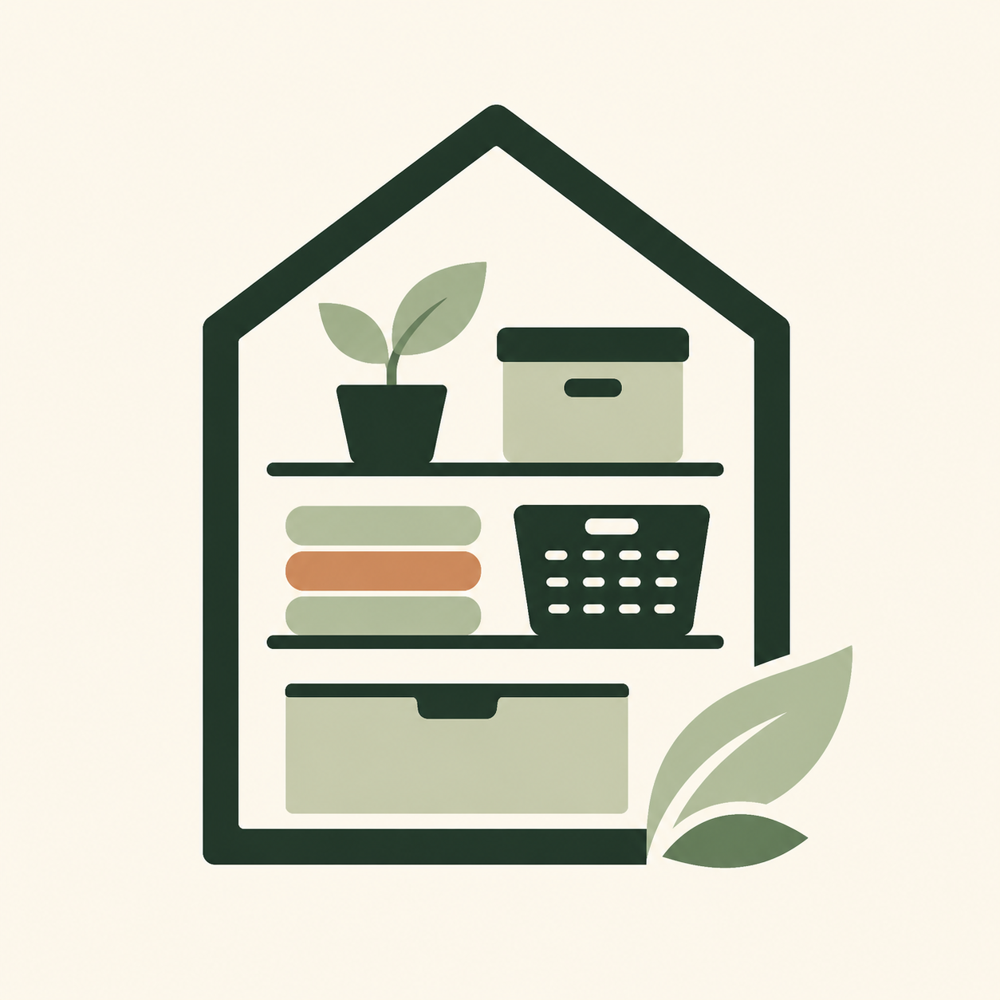

Fix friction first
Start with the spot that creates a daily pile, not the prettiest shelf.

Tidy Small SpacesSmall-space organization
Simple storage ideas for renters, apartment dwellers, and anyone who wants less clutter without a complicated makeover.
Clear one surface
Use the wall height
Give loose items a home
A simpler method
Start with the spot that creates a daily pile, not the prettiest shelf.
Look behind doors, under beds, and above eye level before buying furniture.
Measure first and choose storage only when it solves a specific problem.
Practical guides
Every guide begins with a free action you can take today. Optional product ideas come after the method.
Apartment storage
Guide 01
Seven renter-friendly ways to use overlooked vertical space.
Read the guideGuide 04
Plan vertical storage that stays practical, removable, and easy to reach.
Read the guideGuide 07
Find useful space before adding more bins, baskets, or furniture.
Read the guideGuide 09
Place heavier items lower and make high shelves useful without overloading them.
Read the guideGuide 10
Walk through a room with a fresh eye before assuming you need more furniture.
Read the guideEntryway organization
Guide 02
A practical landing zone for keys, shoes, bags, and incoming mail.
Read the guideGuide 05
Clear the daily pile and create a landing zone with a short timed routine.
Read the guideGuide 08
Build a simple system around the items that arrive home with you.
Read the guideMeasure-first storage
Guide 03
Measure, sort, and choose the right storage before you buy anything.
Read the guideGuide 06
Check the common measurement mistakes before adding storage containers.
Read the guide